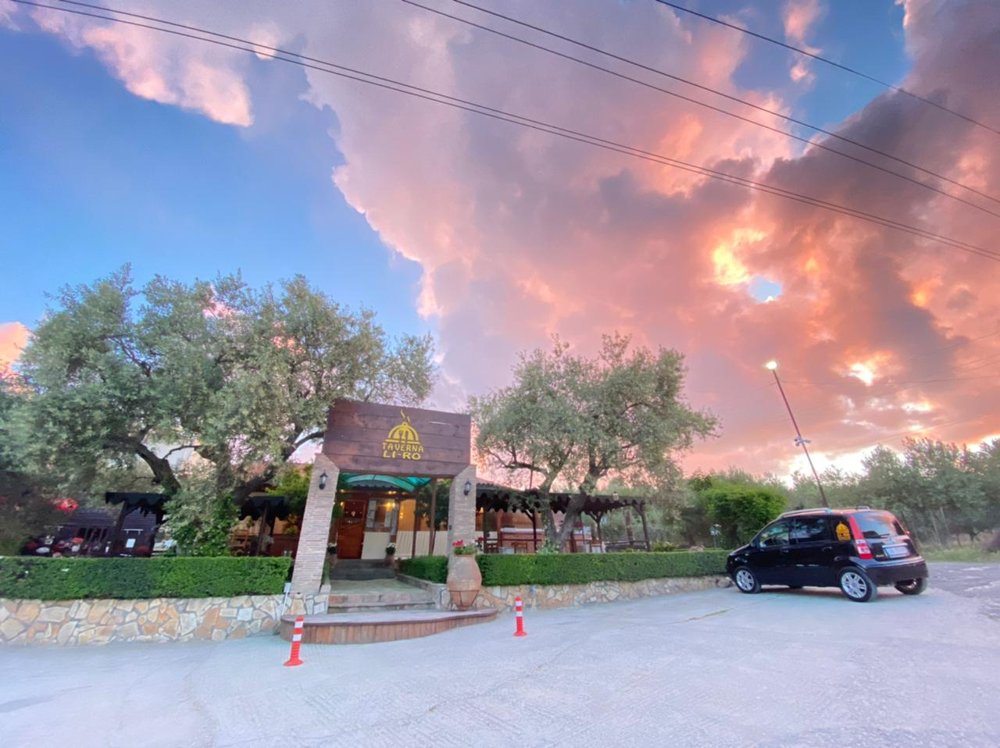

Jennifer Soft
Founder and CEO
Vivamus cursus leo nec sem feugiat sagittis. Duis ut feugiat odio, sit amet accumsan odio.
This is about page of simple house template. You can modify and use this HTML template for your website. Total 3 HTML pages included in this template. Header image has a parallax effect.
Founder and CEO
Vivamus cursus leo nec sem feugiat sagittis. Duis ut feugiat odio, sit amet accumsan odio.
Executive Chef
Praesent non vulputate elit. Orci varius natoque et magnis dis parturient, nascetur ridiculus mus.
Kitchen Manager
Aenean sapien sem, ultricies sed vulputate et, auctor vel mauris. Integer sit amet diam eget est facilisis lacinia vitae.
Culinary Director
Praesent non vulputate elit. Orci varius natoque penatibus et magnis montes, nascetur ridiculus mus.
Donec sed orci fermentum, convallis lacus id, tempus elit. Sed eu neque accumsan, porttitor arcu a, interdum est. Donec in risus eu ante.
Read MoreMaecenas pretium rutrum molestie. Duis dignissim egestas turpis sit. Nam sed suscipit odio. Morbi in dolor finibus, consequat nisl eget.
Read MoreMorbi in dolor finibus, consequat nisl eget, pretium nunc. Maecenas pretium rutrum molestie. Duis dignissim egestas turpis sit.
Read More
Sed ligula risus, interdum aliquet imperdiet sit amet, auctor sit amet justo. Maecenas posuere lorem id augue interdum vehicula. Praesent sed leo eget libero ultricies congue.
Redistributing this template as a downloadable ZIP file on any template collection site is strictly prohibited. You will need to contact TemplateMo for additional permissions about our templates. Thank you.